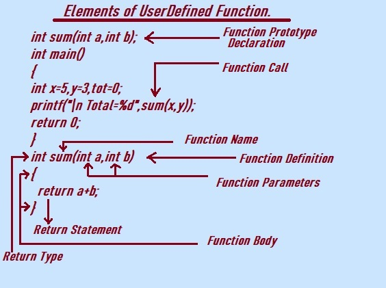

In this tutorial section we will learn Elements of user defined function in C programming Language.
Function in C programming language is a block of code used to perform some specific unique task.
User Defined Function in C programming are created by programmer to perform specific operations or task.
User Defined Function is the part of the C program developed or written by the user or developer.
These functions will not be available to use unless included or defined in the program.
User Defined Function in C Programming consist of several elements.
Let us study them one by one from the following given diagram.

Elements of User Defined Function in C programming.
Let us understand the elements of user defined function from the Given Diagram.
1. Function Prototype/Declaration: declaration of function plays very important role. it simply shows the name of the function,the number of arguments or parameters and its types and the return type of the function.
It is specialy placed at the very beginning of the program or in a header file.
Programmer need to declare the function before the definition of the main() function if the definition is after the main() function.
int sum(int a,int b);
int sum(int a,int b); is the Function prototype or declaration .
The function sum() is declared with two int parameters a,b and return type is int.
it performs the addition of two integer and then returns the result as integer.
Syntax:
return type FunctionName(Data Type varname,Data Type varname);
2. Function Definition:
A function definition actually implements the functions prototype. Funtion definition has the body to implements everything declared in function prototype.
Function definition specifies the name of the function, the types and number of parameters it expects to receive, and its return type and the function body(the set of statement that defines the task to be performed by function).
A function definition consists of several elements:
1. Return Type.
2. Function Name.
3. Parameters.
4. Function Body.
The function definition is is the actual implementation where programmer write the actual code that performs the desired specific task or operations.
A function definition example in C:
int sum(int a, int b)
{
return a + b;
}
Explanation:
int sum(int a,int b)
int is the return type which indicate that the function returns integer value.
sum is the name of the function.
(int a,int b) is the list of parameters.
Function Body:
function body is enclosed in curly braaces { }.
{
return a + b;
}
3. Return Type: In C programming Language functions can have a return type. After successful execution, the function returns the data type value to the calling program.Return type is the type of data value that the function will return after execution.
for e.g if we define a function as having return type int then the function does returns integer value.
Return type can be any valid C programing data type, such as float,int,void or char
void return type indicates that the function does not return anythind to the calling program.
For e.g, in C programming Language, we can define a function with a specific return type using the syntax:
return_type function_name(parameter_list)
{
// function body return value;
// value must match the specified return_type
}
4. Function Name: The function name is a unique identifier used to call the function from other parts of the program. It should follow the naming conventions of C and be meaningful,descriptive of the function's purpose.
The naming convention/Rules for a function in the C programming:
1. Function Name should not start with numbers.Functions in C usually begin with a lowercase letter.
2. Function name should not be a keyword or reserved word name.
3. If the function name is composed of multiple words,space is not allowed in the multiple words,the words are typically separated by underscores.
4.Function names should be descriptive and indicate the purpose.
5.It is recommended to use lowercase letters for function names to differentiate them from other C language elements like keywords and data types.
For example, a function that calculates the division of two numbers could be named like "calculate_division" or "divide_numbers".
5. Function Parameters: Function Parameters are input or used to pass the value to a function.Parameters are optional elements that allow the function to receive input values from the calling code. They are enclosed within parentheses after the function name and can be of any valid C data type.
e.g. Syntax:
int sum(int a,int b)
In this example, the function sum has two integer parameters a and b , the data type of both of them is int.
6. Function Body: The function body contains a set of instruction or statements that define the operations to be performed by the function. It is enclosed within curly { } braces and executed when the function is called.
e.g
int sum(int a,int b)
{
return a+b;
}
in this case the function body is as return a+b;, which is the statement that return the addition result to the calling program.
7. Return Statement: If the function has a return type other than void, it must include a return statement to specify the value to be returned. The return statement in a C function is used to specify the value that the function will return to the calling program.
Syntax is:
return expression;
This statement terminates the function's execution and passes the value back to the calling program or code.
1. C program to illustrate all function elements.
#include<stdio.h>
int sum(int a,int b); //Function prototype/Declaration
int main()
{
int x=5,y=3,tot=0;
printf("\n x=%d",x);
printf("\n y=%d",y);
printf("\n Total=%d",sum(x,y));
return 0;
}
int sum(int a,int b) //Function definition or implementation.
{
return a+b;
}
Output:
x=5
y=3
Total=8